The Start Page in Meddbase serves as the central hub for users, offering quick access to various features and functionalities within the system. Upon logging in, all users are directed to this page, which is designed to help navigate the system efficiently and manage daily tasks.
This article will break down the key components of the Start Page, explaining their roles and how to make the most of them. By understanding the layout and features available, users can streamline their workflow and easily access important functions, from patient management to task tracking and communication tools.
Once logged in, you will automatically be directed to the Start Page which may look like the image below. Every user starts their day from this page.
The layout of the central tiles may be different depending on the Start Page Layout configuration.
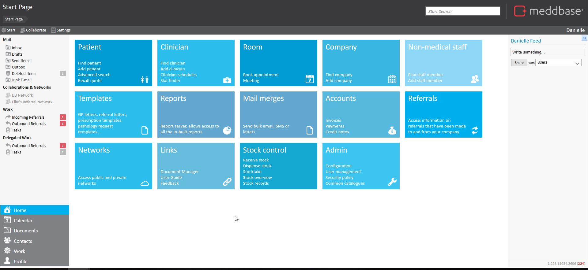
This is the Meddbase Main Navigation Page (Start Page). All parts of the system can be accessed through this page.
In the top right-hand corner of the page by clicking on the Meddbase logo this displays a 'Quick Links' section which can also be used to access the more commonly used parts of the system. These quick links are available from wherever you are in Meddbase, simply by clicking on the Meddbase logo.
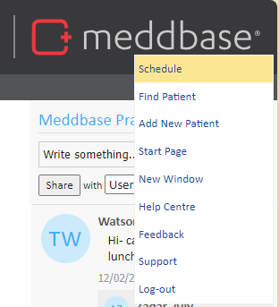
| Control | Description |
| Schedule | This will open the side by side schedules. More information on this can be found at Booking an Appointment: Side-by-side Scheduler. |
| Find Patient | This will take you to the patient search function. |
| Add New Patient | From here you can add a new patient to your chamber. More information on this can be found at How to add a patient. |
| Start Page | Will take you back to the start page. This can also be done by clicking on the home icon at the start of the breadcrumb trail. |
| New Window | Use this if you would like to open an additional tab of Meddbase. |
| Help Centre | You will be directed to our Help Centre, that contains articles on configuration and functionality of Meddbase. |
| Feedback | This is Meddbase UserVoice, where suggestions and feedback can be provided as we continue evolve and improve our product. |
| Support | This function allows you to raise a ticket for additional support from our dedicated support team. |
| Log Out | To log out of Meddbase. |
To the left of the Meddbase logo is our Search Bar function. This allows you to search your chamber for patients, clinicians, appointments, invoices and perform calculations. Full functionality can be found in the following article Search Bar.
Meddbase features a Breadcrumb Trail, which is permanently displayed in the top left-hand corner of the application. This trail shows the pages you have most recently accessed, allowing you to easily navigate back to previous pages. To move back a stage or return to the Home Page, simply select an item from the trail.
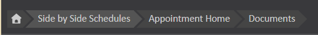
The Start Page will always appear at the beginning of the trail. It is recommended to avoid using the back and forward buttons in the browser, unless there is no other option, to ensure smooth navigation within the system.
Notifications appear in this section and can include a range of alerts within the system, such as updates on tasks, messages from patients, emails, and more.
Some text within these notifications is hyperlinked, allowing you to directly access the relevant content, this is in a light grey font. Other messages are fixed, providing information without the option for direct navigation.
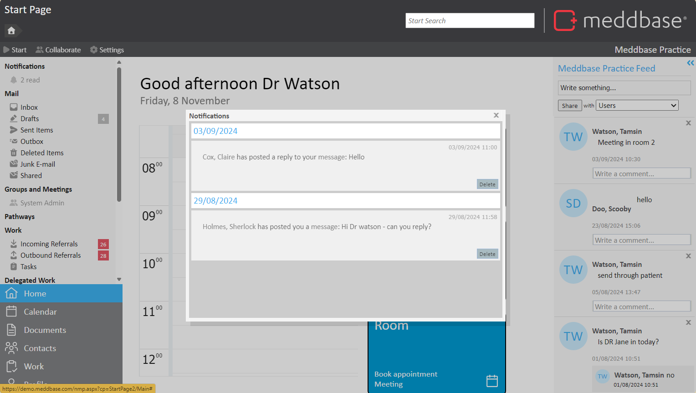
The Mail option is a list of emails sent from or within Meddbase using the Meddbase email address.
More information on the Mailing system in Meddbase can be found at Creating new Emails
Please note that this is not outlook and will not be linked to your external mail server.
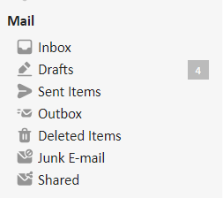
Any Networks or Collaborations you have joined will also be displayed on the left-hand column below the mail option for easy access to these.
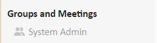
Read more about networks here Understanding Networks - ownership, access types, options and database restrictions and collaborations here Creating Collaborations.
Displays tasks assigned specifically to you or your role group, showing items that need your direct action. This serves as your active to-do list for work items that require completion.
The types of work that appear in this section will depend on the configuration of your chamber.
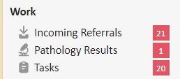
This section shows items you’ve assigned to others or that have been assigned to your group but completed by someone else. This provides visibility into the work you have delegated, helping you track and oversee those tasks without having to take action yourself.
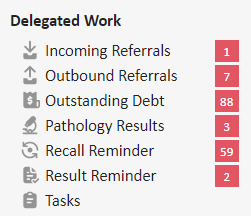
The People Online section provides real-time visibility into users currently logged into the system. This feature allows team members and managers to see which colleagues are available and active, making it easier to coordinate tasks, request support, or communicate directly with those online. It can also assist in understanding overall team availability, helping users locate the right person or role for assistance with urgent work items.
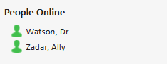
Users may also use this page to navigate between their personal calendar, contacts, tasks and settings using the navigation options at the bottom left of the page.
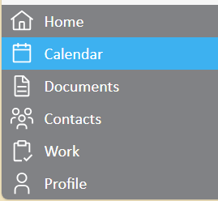
The Calendar page provides a daily view of the user's schedule. This is the user's diary. From this page, you can view appointments, access consultations, and book meetings.
Appointments can not be booked from this page. Please use the Side-by-Side Schedule instead of the diary linked to the home page.
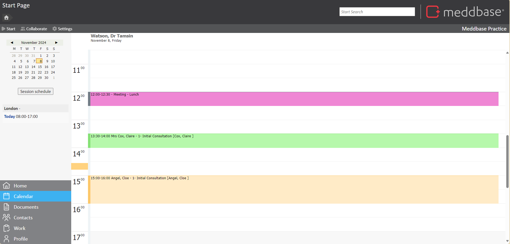
This is the user's document area. This allows for documents to be uploaded here as well as new documents to be created. These however will only remain here and not link to any patient or clinician or anywhere else within the system.
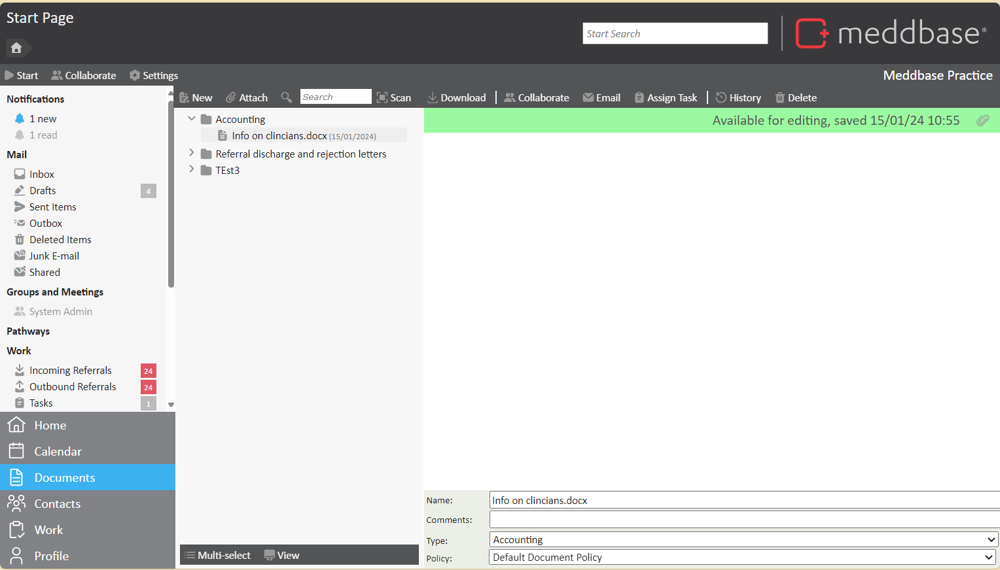
The contact section is a personal address book for each user.
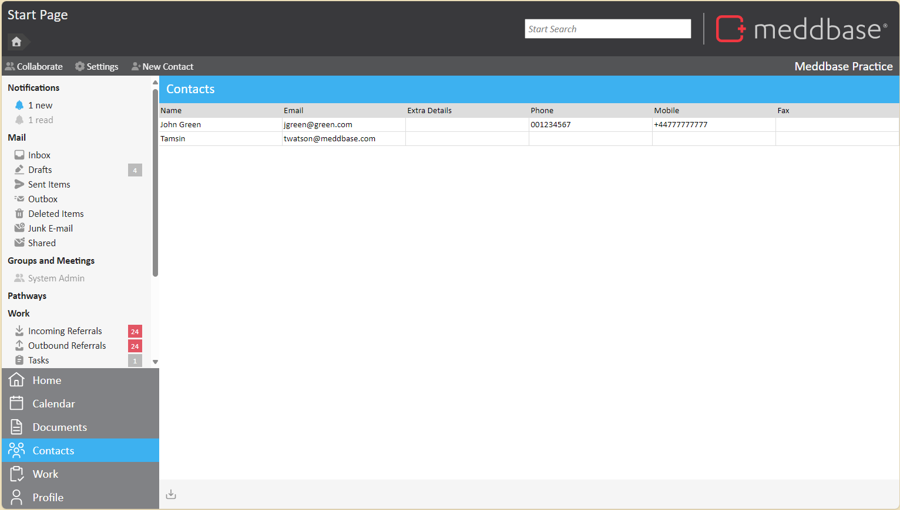
The Work page is a consolidated list of all work items, combining various Work Types into one comprehensive view. This allows users to see all tasks, regardless of their specific type, in a single list. It includes details such as due dates, task assignments, and a summary of the required actions, helping users stay organised and efficiently manage their workload.
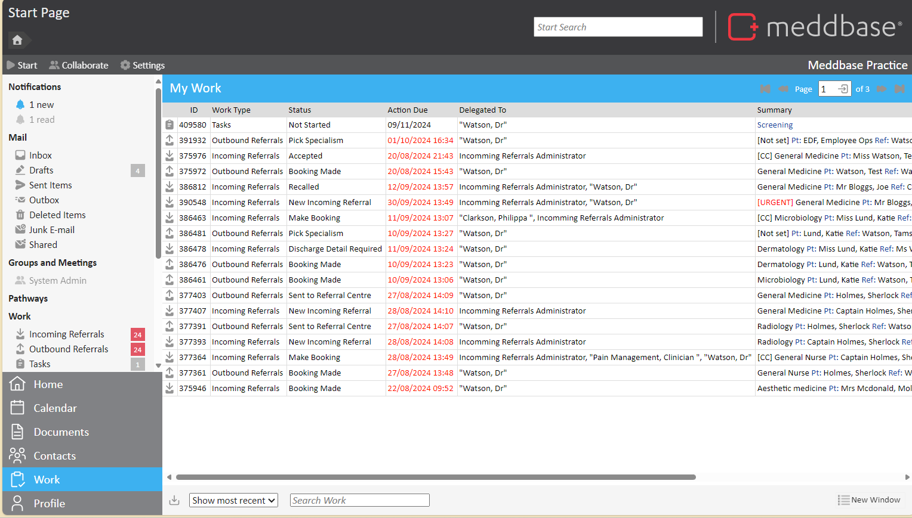
This is where users can set a public profile that colleagues and networked connections can view, including details like your LinkedIn profile URL.
Clicking Settings in the top left-hand corner, allows users to set preferences such as their default location and Out of Office settings for when on annual leave. Additionally, users can manage notification preferences for when they are logged in or out of the system for each section of the application.
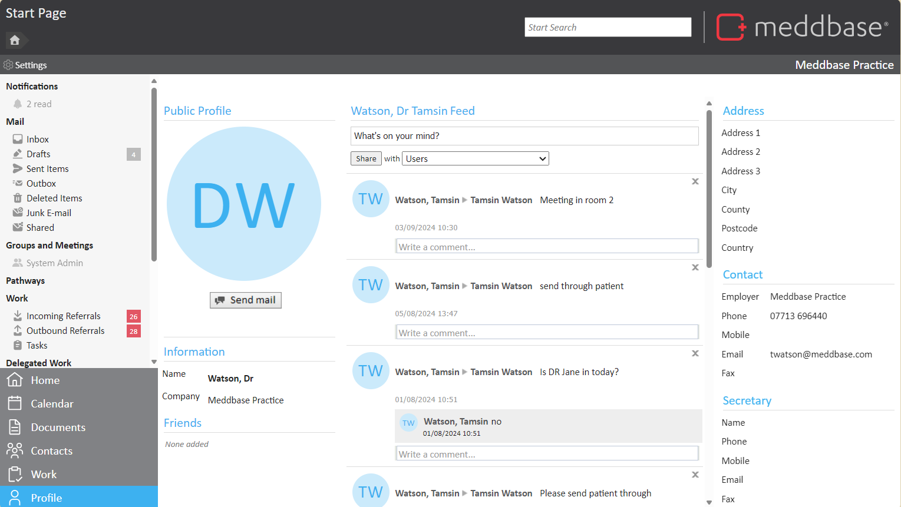
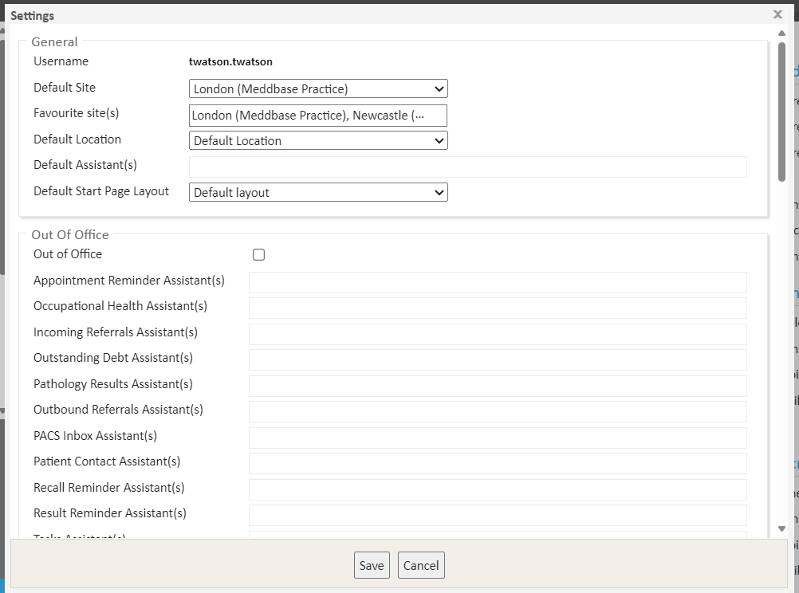